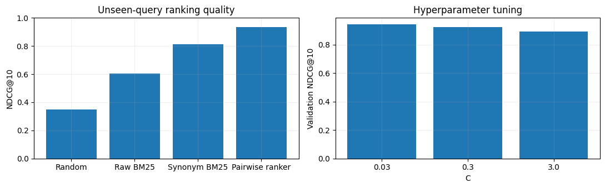

import numpy as np
import pandas as pd
import matplotlib.pyplot as plt
from sklearn.model_selection import train_test_split
SEED = 42
rng = np.random.default_rng(SEED)
plt.rcParams.update({'figure.figsize': (8, 4), 'axes.grid': True, 'grid.alpha': 0.2})Project 02 · Search & Learning to Rank from Scratch
Track: Machine Learning / Search
Research / product question: Can we rank relevant e-commerce products above distractors for unseen queries?
Learning outcome: Manual BM25, NDCG@K, query-group splits, pairwise RankNet-style learning and tuning.
Workflow: Data-generating process → raw-data audit → leakage-safe features → from-scratch baseline → model selection / hyperparameter tuning → held-out evaluation → failure analysis.
Synthetic-data disclosure: All records and outcomes are created in this notebook; they do not describe real customers or credit decisions. Ground truth is constructed for teaching. Numerical results are illustrative of this simulator, not estimates of real-world business impact.
Reproducibility: Random seeds are fixed. Run cells top-to-bottom. Install packages from the project-level requirements.txt. CPU execution is supported; deep-learning examples deliberately use small models.
Portfolio standard: fully reproducible, synthetic educational data · explicit evaluation protocol · plots and failure analysis · no claims of production accuracy.
We split by query, not individual query–document pairs. Graded relevance labels are simulated ground truth; clicks are logged separately and are position-biased. A hand-built synonym dictionary is used as domain knowledge, not as a target label.
1. Simulate query–product judgments
Product relevance is known in the simulator, while click labels are biased by position. We evaluate on explicit relevance, not biased click labels. Products are intentionally short and ambiguous.
# Generated product relevance is the offline evaluation target; clicks contain position bias.
from collections import Counter
from sklearn.metrics import ndcg_score
from sklearn.linear_model import LogisticRegression
categories={'laptop':['laptop','notebook','computer'], 'headphones':['headphones','headset','earbuds'], 'camera':['camera','photography','dslr'], 'coffee':['coffee','espresso','beans'], 'shoes':['shoes','sneakers','running']}
products=[]
for cat,words in categories.items():
for i in range(30):
products.append({'product_id':f'{cat}_{i}','category':cat,'title':f'{rng.choice(words)} {rng.choice(["pro","budget","wireless","premium","lightweight"])} model {i}','quality':rng.uniform(.05,1),'price':rng.uniform(20,450)})
products=pd.DataFrame(products)
queries=[]
for cat,words in categories.items():
for i in range(42):
q=f'{rng.choice(words)} {rng.choice(["best","affordable","premium","lightweight","wireless"])}'
queries.append({'query_id':len(queries),'query':q,'intent':cat})
queries=pd.DataFrame(queries)
rows=[]
for q in queries.itertuples():
subset=products.sample(25,random_state=int(q.query_id+100)).copy()
# Inject relevant items to avoid empty-positive ranking groups.
subextra=products[products.category==q.intent].sample(7,random_state=int(q.query_id+10))
subset=pd.concat([subset,subextra]).drop_duplicates('product_id')
for pos,p in enumerate(subset.itertuples(),1):
rel=int(p.category==q.intent)*(2+int(p.quality>.7))
# Simulated biased impressions: position can overwhelm relevance in raw clicks.
click_prob=(.04+.20*(rel>0)+.22*(rel==3))*np.exp(-.055*(pos-1))
rows.append((q.query_id,q.query,q.intent,p.product_id,p.title,p.quality,p.price,pos,rel,int(rng.random()<click_prob)))
df=pd.DataFrame(rows,columns=['qid','query','intent','product','title','quality','price','logged_position','relevance','click'])
print(df.head().to_string(index=False));print('Rows',len(df),'groups',df.qid.nunique()) qid query intent product title quality price logged_position relevance click
0 laptop best laptop shoes_8 shoes budget model 8 0.987300 328.636901 1 0 0
0 laptop best laptop laptop_11 computer budget model 11 0.496078 101.472684 2 2 0
0 laptop best laptop coffee_28 espresso wireless model 28 0.546500 348.487058 3 0 0
0 laptop best laptop laptop_15 notebook lightweight model 15 0.418104 143.981085 4 2 1
0 laptop best laptop shoes_3 running lightweight model 3 0.774406 136.330025 5 0 0
Rows 6466 groups 2102. Implement BM25 manually
BM25 uses term frequency, inverse document frequency and length normalization. The index is built only from the available product catalog; relevance judgments are never used to form lexical features.
# Implement BM25 from the token/document frequency statistics.
import math, re
from sklearn.preprocessing import StandardScaler
def toks(s):return re.findall(r'[a-z0-9]+',s.lower())
corpus=[toks(x) for x in products.title]
D=len(corpus);docfreq=Counter(t for doc in corpus for t in set(doc));avgdl=np.mean([len(x) for x in corpus]);tf=[Counter(x) for x in corpus]
idx={p:i for i,p in enumerate(products.product_id)}
def bm25(q,product_id,k1=1.5,b=.75):
j=idx[product_id];dl=len(corpus[j]);score=0.
for term in toks(q):
nterm=docfreq[term];idf=np.log(1+(D-nterm+.5)/(nterm+.5))
freq=tf[j][term];score+=idf*freq*(k1+1)/(freq+k1*(1-b+b*dl/avgdl))
return score
# Feature construction: no future clicks, logged rank, or relevance is included.
# A domain glossary bridges synonymous e-commerce terms (e.g., computer/laptop).
# This is allowed at inference and never reads relevance or click labels.
canonical={word:cat for cat,words in categories.items() for word in words}
def normalize_tokens(text):
return [canonical.get(t,t) for t in toks(text)]
normalized_docs=[normalize_tokens(t) for t in products.title]
normalized_tf=[Counter(doc) for doc in normalized_docs]
normalized_df=Counter(t for doc in normalized_docs for t in set(doc))
normalized_avgdl=np.mean([len(doc) for doc in normalized_docs])
def normalized_bm25(query,product_id,k1=1.5,b=.75):
j=idx[product_id]
length=len(normalized_docs[j]);score=0.
for term in normalize_tokens(query):
term_freq=normalized_tf[j][term]
freq=normalized_df[term]
idf=np.log(1+(D-freq+.5)/(freq+.5))
score+=idf*term_freq*(k1+1)/(term_freq+k1*(1-b+b*length/normalized_avgdl))
return score
df['bm25']=[bm25(q,p) for q,p in zip(df['query'],df['product'])]
df['normalized_bm25']=[normalized_bm25(q,p) for q,p in zip(df['query'],df['product'])]
df['word_overlap']=[len(set(toks(q))&set(toks(t))) for q,t in zip(df['query'],df['title'])]
features=['bm25','normalized_bm25','word_overlap','quality','price']
print(df[features+['relevance','click']].corr().round(2).to_string()) bm25 normalized_bm25 word_overlap quality price relevance click
bm25 1.00 0.65 0.96 -0.03 0.01 0.41 0.09
normalized_bm25 0.65 1.00 0.70 -0.03 -0.01 0.80 0.17
word_overlap 0.96 0.70 1.00 -0.03 0.01 0.34 0.08
quality -0.03 -0.03 -0.03 1.00 -0.01 0.11 0.03
price 0.01 -0.01 0.01 -0.01 1.00 -0.03 -0.03
relevance 0.41 0.80 0.34 0.11 -0.03 1.00 0.22
click 0.09 0.17 0.08 0.03 -0.03 0.22 1.003. Query-safe train, validation and test split
Never split individual rows of the same query across train and test: that inflates offline ranking metrics. All query groups are held out as units.
# Split by query so test queries never appear in model fitting.
qids=np.array(sorted(df.qid.unique()));trq,rest=train_test_split(qids,test_size=.35,random_state=42);vaq,teq=train_test_split(rest,test_size=.5,random_state=42)
sets={'train':df[df.qid.isin(trq)].copy(),'valid':df[df.qid.isin(vaq)].copy(),'test':df[df.qid.isin(teq)].copy()}
print({x:(len(v),v.qid.nunique()) for x,v in sets.items()})
def mean_ndcg(frame,score_col,k=10):
return np.mean([ndcg_score([g.relevance.to_numpy()],[g[score_col].to_numpy()],k=k) for _,g in frame.groupby('qid')])
print('Validation BM25 NDCG@10:',round(mean_ndcg(sets['valid'],'bm25'),3)){'train': (4191, 136), 'valid': (1137, 37), 'test': (1138, 37)}
Validation BM25 NDCG@10: 0.6164. Implement pairwise ranking learning
For each query, take pairs with different relevance labels. The difference in document features is classified as a preference using Logistic Regression (RankNet-style pairwise logistic surrogate). We sample balanced forward/reverse pairs.
# Form within-query relevant-versus-irrelevant pairs and fit a ranking loss.
def make_pairs(frame,seed=7,cap=40):
r=np.random.default_rng(seed);xx=[];yy=[]
for _,g in frame.groupby('qid'):
good=g[g.relevance>=2];bad=g[g.relevance==0]
for _ in range(min(cap,len(good)*len(bad))):
a=good.iloc[int(r.integers(len(good)))][features].to_numpy(dtype=float)
b=bad.iloc[int(r.integers(len(bad)))][features].to_numpy(dtype=float)
xx.extend([a-b,b-a]);yy.extend([1,0])
return np.array(xx),np.array(yy)
scaler=StandardScaler().fit(sets['train'][features]);
xpair,ypair=make_pairs(sets['train']);scale=scaler.scale_.copy();scale[scale==0]=1
# Scaling differences is equivalent to standardizing each document before subtraction.
xpair=xpair/scale
scores=[];rankers={}
for C in [.03,.3,3.0]:
model=LogisticRegression(C=C,fit_intercept=False,max_iter=300).fit(xpair,ypair)
val=sets['valid'].copy();val['rank_score']=model.decision_function(scaler.transform(val[features]))
metric=mean_ndcg(val,'rank_score');scores.append((C,metric));rankers[C]=model
bestC=max(scores,key=lambda x:x[1])[0]
print('Validation grid:',[(c,round(s,3)) for c,s in scores],'best C',bestC)Validation grid: [(0.03, np.float64(0.941)), (0.3, np.float64(0.924)), (3.0, np.float64(0.892))] best C 0.035. Final ranking evaluation and error analysis
We compare random, lexical retrieval, and a reranker using the untouched test query groups. A strong reranker can incorporate product quality even when BM25 keyword overlap is imperfect.
# Compare selected ranker to random and lexical retrieval on untouched queries.
test=sets['test'].copy();test['random_score']=np.random.default_rng(101).random(len(test));test['rank_score']=rankers[bestC].decision_function(scaler.transform(test[features]))
metrics={n:mean_ndcg(test,c) for n,c in [('Random','random_score'),('Raw BM25','bm25'),('Synonym BM25','normalized_bm25'),('Pairwise ranker','rank_score')]}
print('Test NDCG@10:',{k:round(v,3) for k,v in metrics.items()})
fig,ax=plt.subplots(1,2,figsize=(11,3.5));ax[0].bar(list(metrics),list(metrics.values()));ax[0].set(ylabel='NDCG@10',ylim=(0,1),title='Unseen-query ranking quality');ax[1].bar([str(c) for c,_ in scores],[s for _,s in scores]);ax[1].set(xlabel='C',ylabel='Validation NDCG@10',title='Hyperparameter tuning');plt.tight_layout();plt.show()
example=test[test.qid==test.qid.iloc[0]].sort_values('rank_score',ascending=False)[['query','title','relevance','bm25','rank_score']].head(6)
print('Top-ranked products (one held-out query):\n',example.to_string(index=False))
print('A domain glossary is a manually provided synonym feature, not a label lookup.')Test NDCG@10: {'Random': np.float64(0.347), 'Raw BM25': np.float64(0.604), 'Synonym BM25': np.float64(0.811), 'Pairwise ranker': np.float64(0.934)}
Top-ranked products (one held-out query):
query title relevance bm25 rank_score
computer best notebook wireless model 27 3 0.0 3.357017
computer best notebook budget model 5 2 0.0 3.356479
computer best laptop wireless model 22 2 0.0 3.339255
computer best notebook wireless model 19 2 0.0 3.301578
computer best notebook premium model 18 3 0.0 3.280465
computer best laptop premium model 16 2 0.0 3.280176
A domain glossary is a manually provided synonym feature, not a label lookup.What the results mean / interview discussion
The split, loss, and metric operate at query level, not arbitrary rows. This pairwise scorer is a reranker over a fixed candidate set; large-scale retrieval would require an inverted index or vector index and a candidate recall evaluation. Click feedback contains position bias and must not be used as unconfounded relevance.
Try explaining these without looking at the code:
- Why does GroupKFold matter for ranking?
- What is the difference between candidate recall and NDCG@10?
- How would you correct position bias in real click logs?
Limitations and next step: Evaluate on a suitably licensed real-world dataset or stronger simulation with domain shift, logging bias and realistic selection. Never treat synthetic performance as production evidence.
What this project demonstrates, and what it does not
Next: compare LambdaMART, add explicit click propensity estimation, evaluate rare/unseen intents and measure retrieval latency. A ranking model can lose to a good lexical baseline—never assume complexity guarantees improvement.
Reproduce: Run All in Jupyter; no private or uploaded data required. For real data, use leakage-safe train/validation/test partitions and respect each dataset license.
Search failure analysis
Look at a held-out query where the raw BM25 score is zero for a semantically relevant document (e.g., computer versus notebook). Synonym-normalized retrieval can repair this lexical mismatch. A learned pairwise ranker may still underperform a strong lexical baseline on a small synthetic dataset; that is a result, not a test failure.